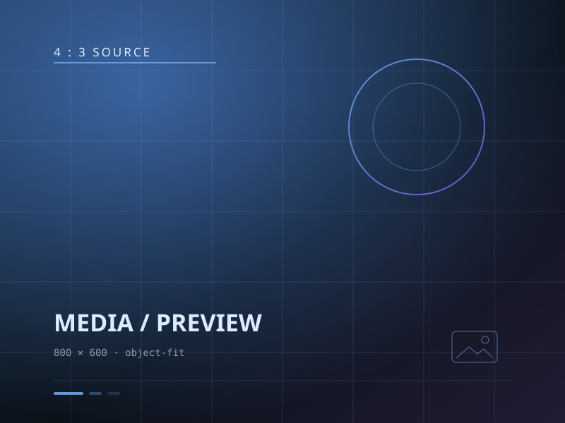

已完成
示例条目 · 画廊卡
★★★★☆
demo 的暗色质感 + 当前控制台的信息密度。先看这一页，确认后再逐屏迁移。
所有页面只从这里取色、圆角、间距和字号。
语义固定：brand 主操作、outlined 次操作、plain 弱操作、danger 破坏性。图标按钮必须有容器和 tooltip。
只用 Web Awesome 表单控件，不再出现原生 input/select/checkbox。
只有一个 Card：画廊/合集用竖卡，队列用横卡变体；媒体比例固定，图片只裁切不拉伸。
控制台主视图保持表格密度；封面 40×54 固定裁切，行高 58，操作统一图标按钮。
| 封面 | 标题 | 时长 | 分辨率 | 状态 | 操作 | |
|---|---|---|---|---|---|---|
| Hqk5l0jvDcK3kyY 2026-11-15 16:12 |
24:29 | 1920×1080 | 已完成 | |||
| pKgz0xHPLaeHN0M 2026-11-15 15:48 |
08:33 | 1280×720 | 待下载 |
Lucide 线性图标，本地 sprite；按钮里 17px，表格里 15px，不用 emoji。
卡片封面 `cover` 裁切；预览 `contain` 留边。任何图/视频都不能被固定宽高拉伸。

16:9 框内裁切，不拉伸全部 `wa-dialog` / `wa-drawer`；点击空白关闭、Esc 关闭；底部动作固定。
空态、标签、进度、错误提示使用同一套组件。